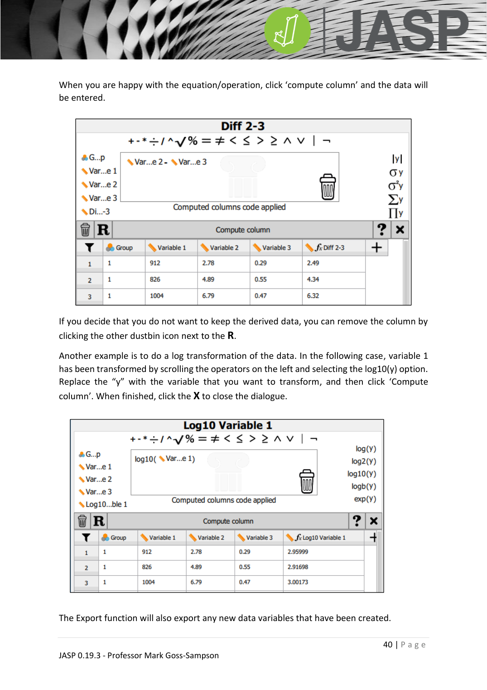
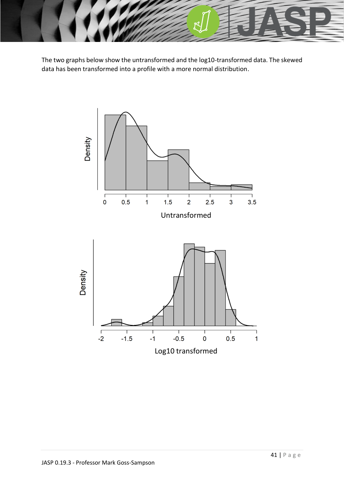

JASP_one_sample_ttest
單樣本 t 檢定（One-sample t-test）
JASP_lecture ←→ JASP_independent_ttest JASP_paired_ttest JASP_binomial_test
對應統計概念
one-sample t-test · t-test · normality test · Shapiro-Wilk test
用途
檢定樣本均數是否與已知或假設的母體均數不同。
$H_{0}$：樣本均數 = 母體均數
假設
- 應變項為連續尺度
- 觀測值彼此獨立
- 資料近似常態分配（JASP_normality_test）
- 沒有顯著離群值（JASP_outliers）
JASP 操作
- Open
one sample t-test.csv - T-Tests > One-Sample t-test
- 將連續變數拖入分析框
- 在 Test value 輸入比較基準（例如 UK 男性平均身高 178 cm）
- 勾 Descriptive、Effect size、Assumption check (Shapiro-Wilk)、Descriptive plot

輸出三表二圖
- Shapiro-Wilk → 確認常態
- t 統計量 + 自由度 + p 值
- 描述統計（M、SD、SE）
- Interval plot：黑點 = 樣本均數，誤差線 = 95% CI，虛線 = 比較值
- Raincloud plot

範例結果
書中範例 1（身高）：t(22) = -0.382, p = .706 → 與 178 cm 無顯著差異 範例 2（體重）：t(22) = -7.159, p < .001 → 樣本顯著輕於 83.4 kg
APA 報告範例
A one-sample t-test showed no significant difference in height compared to the population mean, t(22) = -0.382, p = .706. However, participants were significantly lighter than the UK male population average, t(22) = -7.159, p < .001.
違反常態時
改用 Wilcoxon's signed-rank test 對母體中位數檢定（JASP_wilcoxon）。
對應類別資料
二項類別 → JASP_binomial_test；多類別 → JASP_multinomial_test。
延伸
- 概念詳解：social_science_statistics_book §5.1